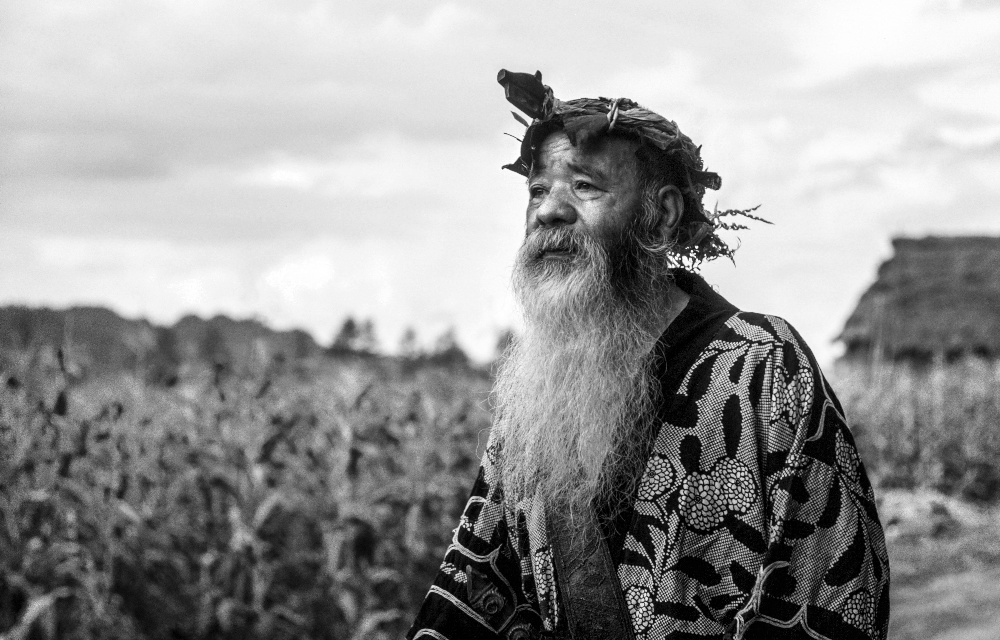
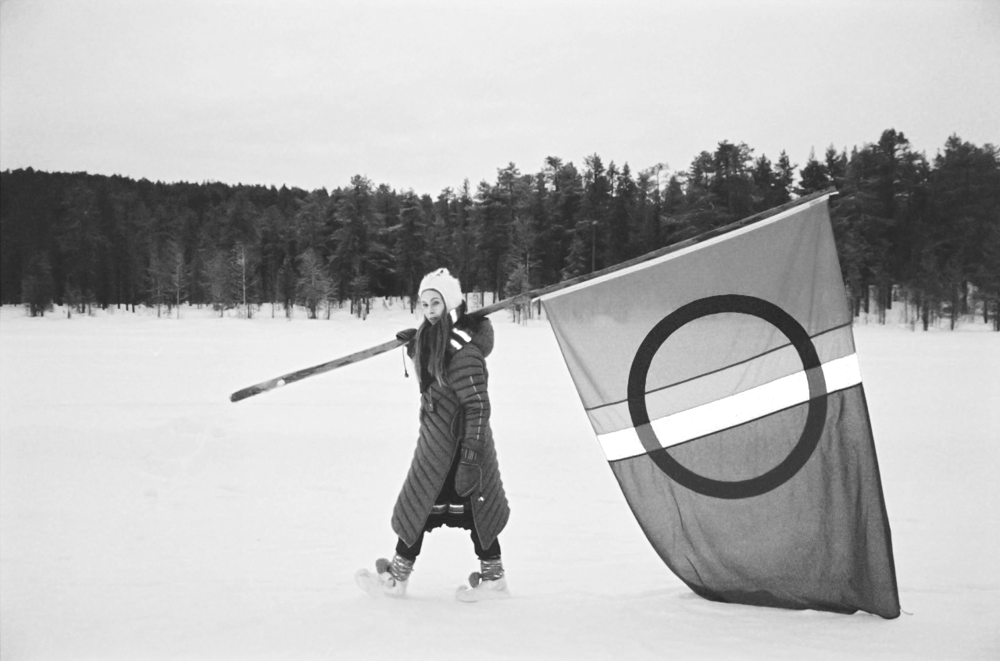

Living
Traces
Languages and traditions that still breathe, gathered from across oceans, deserts, forests, and ice — voices that cannot be replaced.
Endangered
Languages
What you will see here are eight intangible heritages: four endangered languages and four fragile cultural practices, each carrying memory, knowledge, and identity across generations. We invite you to encounter heritage not as something finished or distant, but as something human, vulnerable, and still being kept alive.

Ainu
Hokkaido, JapanOnce suppressed through assimilation policies, Ainu survives through song, ritual, and renewed teaching. Its vocabulary encodes relationships between people, animals, and spirits. Today, community-led schools and performances restore its presence, not as a relic, but as a living voice reclaiming identity, land, and continuity across generations.

Northern Sámi
Norway, Sweden, FinlandSámi languages articulate a deep ecological knowledge shaped by Arctic life. Terms for snow, migration, and reindeer herding reflect centuries of adaptation. Colonial policies once suppressed its use. Today, revitalization through education, media, and governance reconnects language with land and Indigenous presence.

Rapa Nui
Rapa Nui, ChileSpoken on one of the most remote inhabited islands, Rapa Nui carries ancestral memory tied to land and ocean. Pressures from tourism and Spanish dominance have weakened transmission. Revival efforts center on schools and storytelling, ensuring the language continues to anchor identity within a rapidly changing culture.

Ju|'hoansi
Namibia / BotswanaJu|'hoansi is rooted in one of the world's oldest continuous cultures. Its click-based phonetics carry knowledge of tracking, plants, and survival. As modernization shifts lifestyles, transmission weakens. Documentation and community storytelling sustain it, preserving a language inseparable from the rhythms of Kalahari human history.
Endangered
Traditions
Bigwala
UgandaBigwala is a royal music tradition performed with gourd trumpets during ceremonies of the Busoga Kingdom. Once central to cultural identity, it now faces decline due to reduced patronage and aging practitioners. Safeguarding efforts focus on transmission, ensuring that its powerful sound continues to resonate across generations.

Sanké Mon
MaliSanké Mon is a communal fishing ritual marking seasonal cycles and social unity. Thousands gather in coordinated action, blending ecology, spirituality, and celebration. Environmental pressures and social change threaten its continuity, making safeguarding essential to preserving both the practice and its connection to identity.

Jeju Haenyeo
South KoreaHaenyeo are women divers who harvest seafood without oxygen tanks, relying on breath, skill, and environmental knowledge. Aging practitioners and modernization threaten continuity. Their practice embodies resilience, community, and sustainable interaction with the ocean, making its preservation both cultural and ecological.

Noken Weaving
Papua, IndonesiaNoken bags are hand-knotted from natural fibers and used for daily life, ceremony, and symbolic exchange. Their production embodies community identity and knowledge. Industrial alternatives and shifting lifestyles threaten their use, making revitalization essential to sustaining both craft and cultural meaning.
we are.
What remains when a language falls silent, or a tradition is no longer practiced? Not only words or gestures are lost, but entire ways of understanding the world. These living traces carry memory, identity, and knowledge shaped over centuries. They hold ways of seeing time, land, community, and spirit that cannot be replicated once gone.
Yet this is not a narrative of disappearance alone. Across continents, communities are choosing to remember, to teach, to speak, to make, and to continue. Preservation is not passive. It is an act of will. It is the commitment to continuous support in the face of change.
Living Traces is a push forward to recognize that heritage is not distant or static. It exists now, carried by people whose voices and practices remain necessary. Their work asks something of us: to listen more intently, to value what is fragile, and to understand that cultural diversity is not ornamental, but required and essential.
The future of these languages and traditions is not guaranteed. It depends on awareness, respect, and participation. We leave you with a final thought, consider what it means to keep something alive. Not preserved behind glass, but practiced, spoken, and shared.